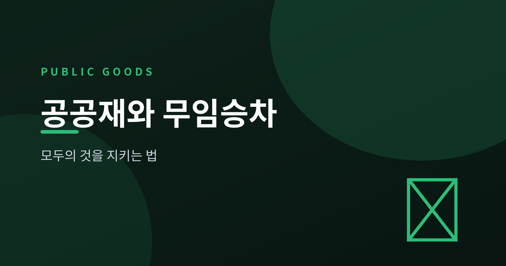
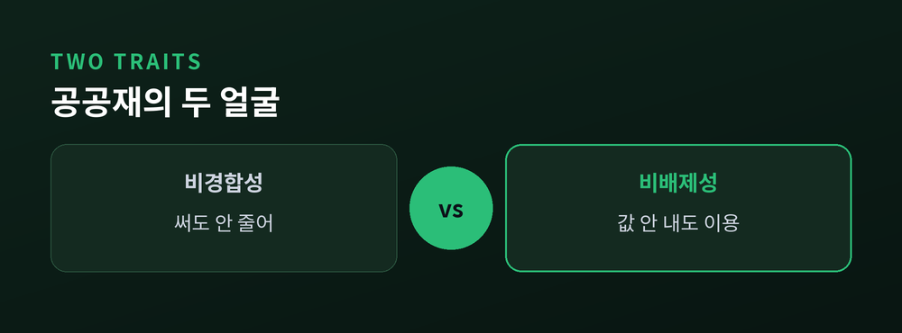
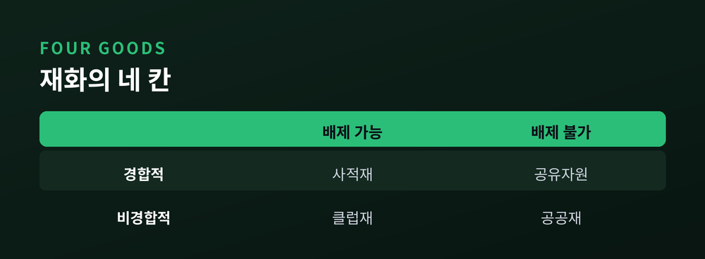
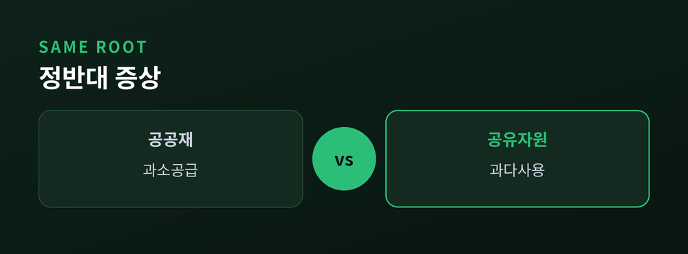
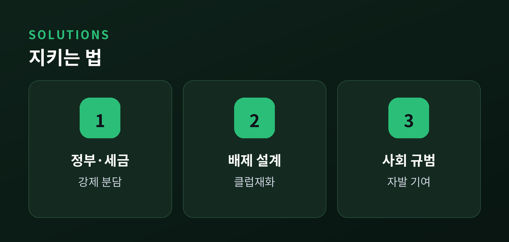

모두의 것은 왜 아무도 책임지지 않을까

이번 글에서는 공공재와 무임승차 문제를 정리해 보겠습니다.
모두에게 필요한데 정작 아무도 돈을 내려 하지 않는, 그 이상한 상황을 경제학은 어떻게 설명하는지 살펴보려 합니다.
가로등 하나에서 시작해 국방과 백신까지 이어지는 이야기입니다.
공공재에는 두 가지 성질이 있습니다.
하나는 비경합성입니다. 내가 가로등 불빛을 쬔다고 옆 사람 몫이 줄지 않습니다.
다른 하나는 비배제성입니다. 값을 치르지 않은 사람도 그 불빛에서 밀어낼 수 없습니다.
두 성질을 온전히 갖춘 것을 순수 공공재라 부릅니다.
국방이 대표적입니다. 국경을 지키면 세금을 안 낸 이웃까지 함께 보호받고, 내 안전이 이웃의 안전을 깎아내리지도 않습니다.

경제학은 재화를 두 잣대로 가릅니다. 막을 수 있는가(배제성), 나누면 줄어드는가(경합성).
이 둘을 엇갈리면 네 칸이 나옵니다.

음식이나 옷은 값을 치른 사람만, 그것도 한 사람만 쓰는 사적재입니다.
넷플릭스나 유료도로는 요금으로 막을 수 있지만 여럿이 함께 쓰는 클럽재입니다.
바다의 물고기는 막을 수 없는데 잡으면 줄어드는 공유자원입니다.
그리고 막을 수도 없고 줄지도 않는 마지막 칸, 그것이 공공재입니다.
문제는 늘 오른쪽 두 칸, 막을 수 없는 재화에서 생깁니다.
배제할 수 없다면, 값을 내지 않고 편승하는 편이 개인에게는 영리한 선택입니다.
남이 내주면 나는 공짜로 누리면 되니까요. 이것이 무임승차입니다.
그런데 모두가 똑같이 영리하게 굴면 어떻게 될까요.
아무도 내지 않고, 필요한 것은 끝내 만들어지지 않습니다. 시장이 실패하는 지점입니다.
여기서 짚어둘 대비가 하나 있습니다.
비경합적인 공공재는 아무도 비용을 안 내 과소공급됩니다.
경합적인 공유자원은 반대로 모두가 먼저 쓰려다 고갈됩니다 — 공유지의 비극입니다.
뿌리는 같고 증상만 정반대인 셈입니다.

가장 익숙한 답은 정부입니다. 세금으로 강제 징수해 공급하면, 무임승차는 강제 승차로 바뀝니다.
국방과 치안이 그렇게 유지됩니다. 다만 정부도 사람들이 얼마나 원하는지 정확히 알기 어렵다는 한계가 있습니다.
민간의 길도 있습니다.
등대는 오래 공공재의 교과서였지만, 경제학자 코즈는 옛 영국 등대가 항구 통행료로 운영됐음을 밝혔습니다.
막을 방법만 설계하면 공공재도 클럽재처럼 값을 매길 수 있다는 뜻입니다.
공영방송 후원이나 기부처럼, 무임승차를 부끄럽게 여기는 사회적 규범이 빈자리를 메우기도 합니다.

정리하면 이렇습니다.
공공재의 딜레마는 사람이 이기적이어서가 아니라, 막을 수 없는 것에는 값이 매겨지지 않기 때문입니다.
"모두의 것은, 누군가 책임지도록 설계할 때 비로소 지켜집니다."
오늘 밤 켜진 가로등 아래를 지날 때, 그 불빛의 비용을 누가 냈는지 한 번쯤 떠올려 보시면 어떨까요.
참고 소스